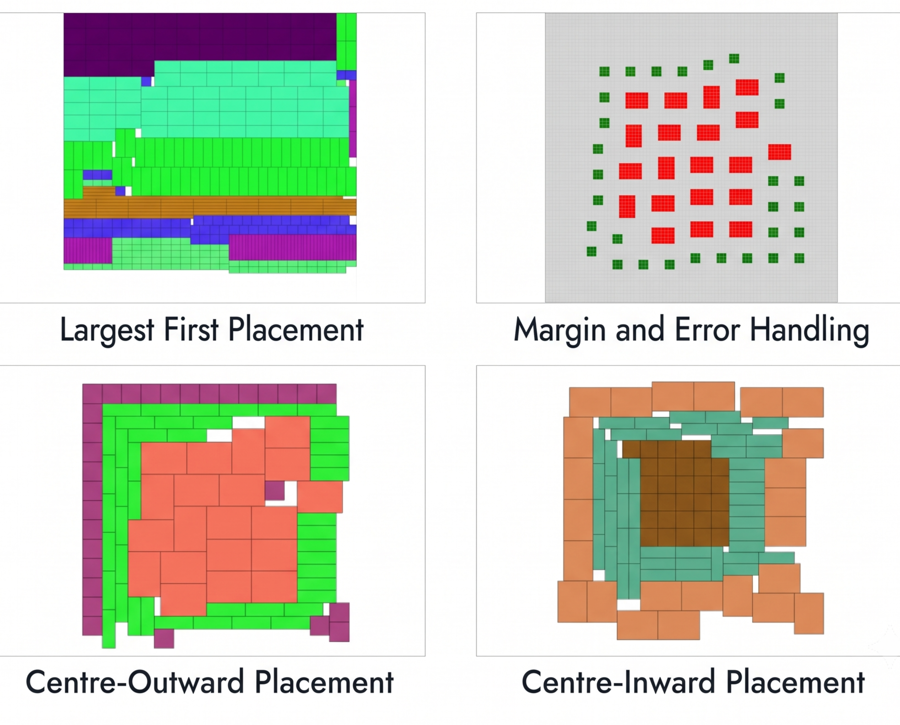
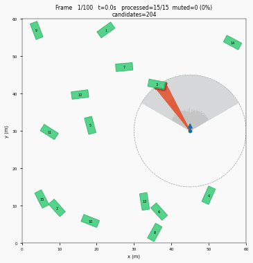

Projects
Engineering work, competitions and industry
Professional Experience
Robotics R&D Intern, ABB Innovation Centre
Palletising is two-dimensional bin packing with physical consequences, because an arrangement that is mathematically optimal is useless if the gripper cannot reach a box or the stack falls over in transit. I built a two-phase recursive partitioning algorithm for single-SKU palletising in .NET C#, and a mixed-SKU pattern generator in four variants accounting for gripper clearance, placement error and stability under motion, with backtracking for feasibility checks.

Key Projects
Vision-Based Unmanned Aerial Manipulator Control
A quadrotor carrying a three degree of freedom arm has to grasp a moving object while the arm it is carrying disturbs its own dynamics. Several 6D pose estimators were compared, including FoundationPose, SAM-6D, EfficientPose and YOLOv5-6D, and FoundationPose was deployed for real-time tracking from RGB-D. Tracking during high-speed pick-up used a hybrid model predictive and L1 adaptive controller, the adaptive part absorbing the model parameter uncertainty the manipulator introduces. Closed-loop grasping was demonstrated in PX4-Gazebo and on hardware.
Fault-Tolerant Control under Rotor Failure
A quadrotor that loses a rotor cannot hold yaw, and the standard controller fights the asymmetry until the vehicle tumbles. The fix is to accept the spin and stabilise around it. Detection runs on the onboard IMU and GPS alone, with a modified two-stage Kalman filter adapting the control effectiveness matrix in thirty milliseconds, and nonlinear dynamic inversion handling the reconfigured vehicle. Everything runs on the PX4 stack with no external computer and no added sensors.
SPART, a Lightweight 2-D LiDAR Emulation Tool
Datasets like INTERACTION record how people really drive, but they store positions and dimensions rather than sensor readings, so a perception pipeline cannot be tested against them directly. Graphical simulators give sensor data, at the cost of a GPU and of traffic that behaves the way a designer scripted it. SPART generates geometrically exact 2-D LiDAR point clouds straight from the recorded trajectories. A temporal eligibility scheduler defers vehicles outside detection range, an angular interval filter discards beams that cannot possibly intersect a given vehicle, and a JIT-compiled kernel, together cutting intersection tests about sixtyfold.

Adversarial Training for Ergodic Reward
Standard reinforcement learning maximises expected reward, which assumes the average over time and the average over many parallel runs are equal (Ergodicity). In non-ergodic environments, however, they are not. This work uses a Wasserstein GAN to transform the reward to make the system ergodic, so existing algorithms apply unchanged. A generator transforms the time-average rewards and a discriminator evaluates them against ensemble averages, with discriminator accuracy near one half indicating the two have become indistinguishable.
Thanopod, Two-Wheeled Self-Balancing Robot
A two-wheeled robot is an inverted pendulum with a cascade system, with an outer loop deciding how far to lean and a fast inner loop holding that lean. Motor dynamics were simulated to model the nonlinear plant, an LQR controller designed for stability, and a Stanley controller with computer vision handled line tracking on a curvilinear course.